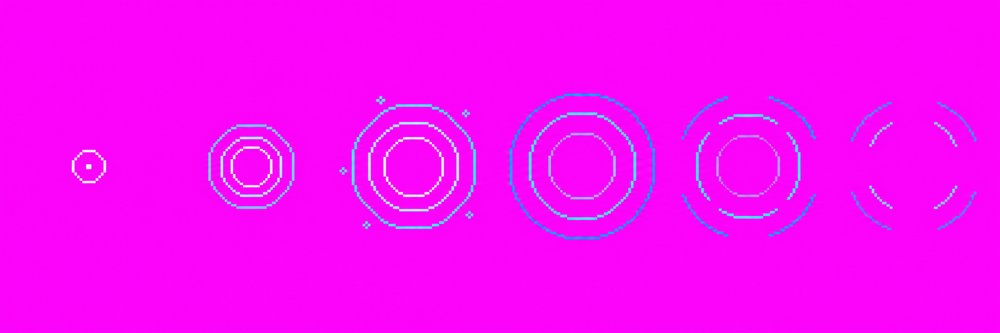
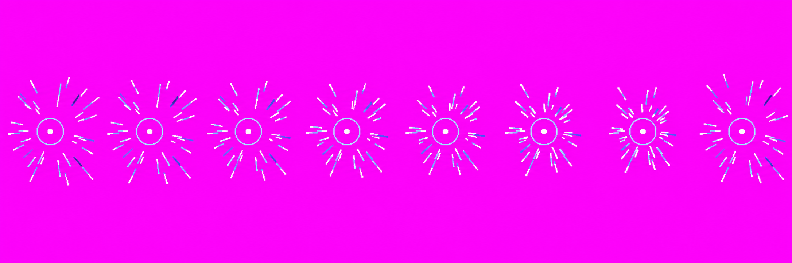
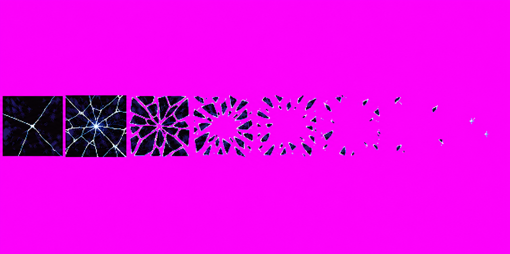

Gojo skills revamp · Batch 3
Infinity and Unlimited Void · 18 October 2026 · branch art/gojo-skills
Needs your drawing decision; nothing in batch 3 is approved. The three candidates are unchanged generator outputs. All reached the image call limit (3 calls each). Source-format holds are substantial: dimensions are not canonical frame strips, near-magenta backgrounds are not exact #FF00FF, and color counts exceed the requested palette. Packer previews are for drawing review only and do not clear source holds. voidFlood has subtle inward movement and an apparently oversized center ring. See each asset's provenance ledger for exact call outcomes and hashes.
A6 · infinityRipple v01 · 3/3 calls used
Space stops the shot: a small point, expanding concentric distortion rings, then broken arcs. The empty center lets the frozen projectile show through.
Packed candidate at 256px HD cell scale
Unchanged generator strip

2172×724 RGB; 47,089 unique RGB colors; 1 exact #FF00FF pixel, with near-magenta variations elsewhere. Packer: 6/6 frames, scale x0.484, 7 stray specks removed. Visual read: six slightly hexagonal ring states, thin cyan-white arcs, empty-looking center. Exact frame sizes, pixel crispness and centering are not certified. No source edits. See art/vfx/raw/infinityRipple_v01.provenance.json.
A11 · voidFlood v01 · 3/3 calls used
Thin information streaks converge toward a small point over the frozen opponent's head, leaving the face area mostly clear.
Packed effect layered over a standing head-and-shoulders silhouette
Unchanged generator strip

2172×724 RGB; 45,583 unique RGB colors; 2 exact magenta pixels, dominant background #FC03FA. Packer: 8/8 frames, scale x0.764. Visual holds: inward motion is subtle and center ring appears oversized relative to the frame; residual face clearance and loop continuity need your read. No source edits. See art/vfx/raw/voidFlood_v01.provenance.json.
A12 · voidShatter v01 · 3/3 calls used
The black pane cracks, separates into angular shards, opens at center, and clears back to the arena.
Packed candidate enlarged over a full-screen black stage
Unchanged generator strip

1774×887 RGB; 69,882 unique RGB colors; 59 exact magenta pixels, dominant background #FC03FA; 1,572,810 pixels outside the expected palette. Packer: 8/8 frames, scale x1.191, 44 stray specks removed. The visual sequence reads as cracked panes followed by shards and a clearing center. Source canvas is not a strict eight-cell strip; exact cell boundaries and the removed specks are technical holds. No source edits. See art/vfx/raw/voidShatter_v01.provenance.json.
Call ledgers and exact original generator paths, prompts, hashes and source audits are recorded in the three adjacent .provenance.json files. Approve/reject each v01 as drawn or give feedback. Drawing approval will not remove the source-format holds or authorize engine integration.